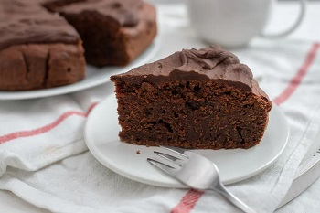

Pyszny w smaku, wilgotny i puszysty murzynek poleca się na deser dla całej rodziny lub słodki lunch dla Twoich dzieci. Poznaj mój szybki i prosty przepis.
Masło rozpuść w rondelku, wsyp cukier i kakao.
Masę czekoladową odstaw do ostygnięcia.
Jajka rozbij i podziel na białka i żółtka.
Białka ubij ze szczyptą soli na gęstą pianę.
Mąkę wsyp do masy czekoladowej i dodaj żółtka, całość wymieszaj do połączenia wszystkich składników.
Do masy dodaj ubite białka i delikatnie wymieszaj.
Przelej ciasto do foremki i upiecz w piekarniku przez 40 minut w 180 stopniach C.